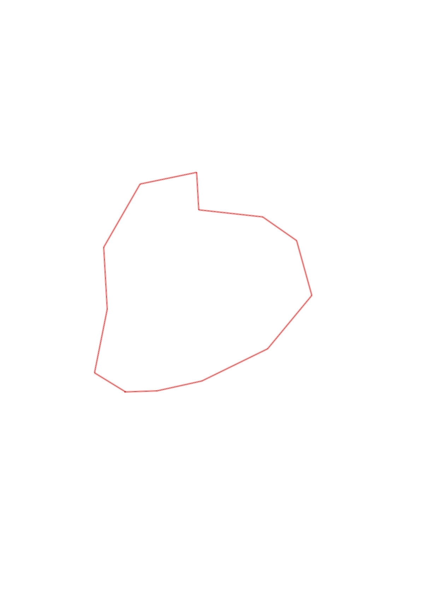
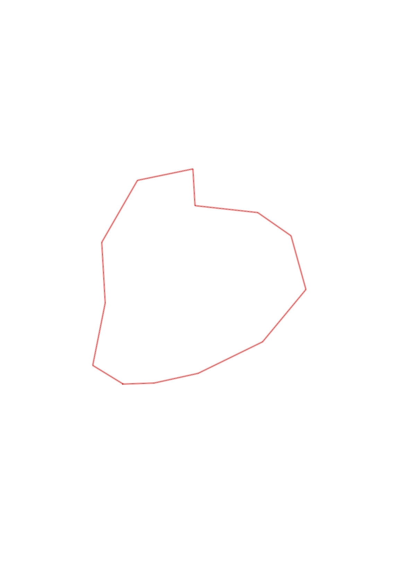

| Control |
Points |
Time Punched |
Distance |
Your Time |
Pace |
Place |
Fastest Time |
Median Time |
% Behind Fastest |
| 63 |
60 |
|
0.24 |
0:02:11 |
09:05 |
9 / 13 |
0:01:34 |
0:02:05 |
39% |
| 80 |
80 |
|
0.34 |
0:03:36 |
10:35 |
2 / 5 |
0:03:33 |
0:03:47 |
1% |
| 60 |
60 |
|
0.54 |
0:03:54 |
07:13 |
1 / 4 |
0:03:54 |
0:04:43 |
0% |
| 81 |
80 |
|
0.52 |
0:04:06 |
07:53 |
3 / 11 |
0:03:21 |
0:04:40 |
22% |
| 46 |
40 |
|
0.42 |
0:04:40 |
11:06 |
2 / 7 |
0:03:46 |
0:04:48 |
23% |
| 61 |
60 |
|
0.31 |
0:07:12 |
23:13 |
6 / 6 |
0:02:54 |
0:04:08 |
148% |
| 34 |
30 |
|
0.48 |
0:04:03 |
08:26 |
6 / 6 |
0:02:42 |
0:03:44 |
50% |
| 39 |
30 |
|
0.28 |
0:04:26 |
15:49 |
7 / 7 |
0:01:51 |
0:02:56 |
139% |
| 44 |
40 |
|
0.43 |
0:03:24 |
07:54 |
2 / 2 |
0:03:02 |
0:03:13 |
12% |
| 53 |
50 |
|
0.54 |
0:06:50 |
12:39 |
2 / 2 |
0:03:18 |
0:05:04 |
107% |
| 58 |
50 |
|
0.46 |
0:06:42 |
14:33 |
3 / 3 |
0:03:20 |
0:03:48 |
101% |
| 35 |
30 |
|
0.48 |
0:05:13 |
10:52 |
1 / 1 |
0:05:13 |
0:05:13 |
0% |
| Finish |
0 |
|
0.27 |
0:01:37 |
05:59 |
6 / 10 |
0:01:23 |
0:01:33 |
16% |
Total Distance Covered: 5.31km
Points Scored: 610
Late Penalty: 0
Final Score: 610
Total Time: 0hours 57minutes 54seconds
Efficiency: 114.88 points/km
 
